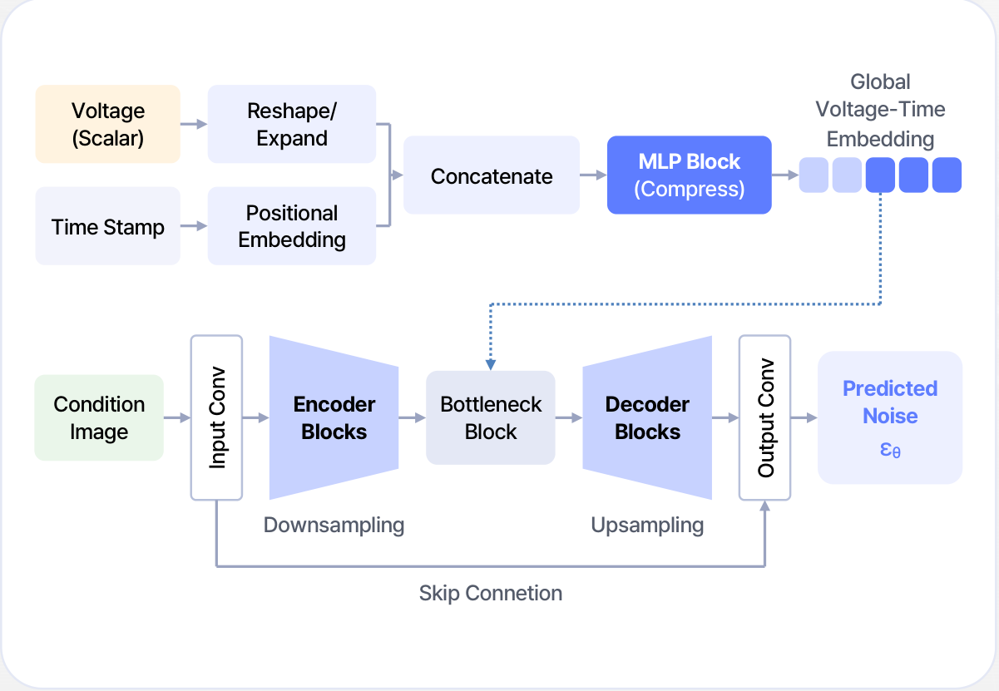
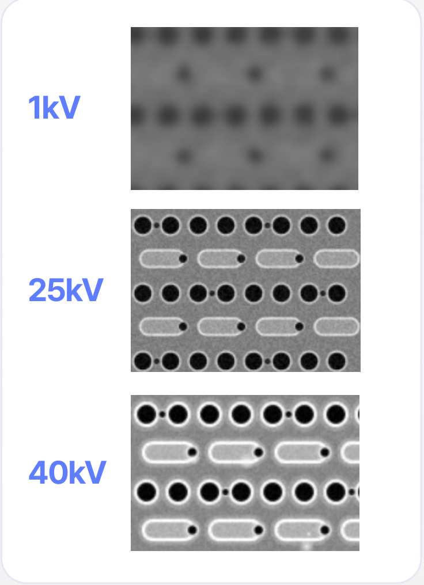

← All projects
SK hynix / Generative AI
Virtual Multi-Voltage SEM Imaging
Research team member · Jan 2025 – Dec 2025
Conditional diffusion
End-to-end PoC
Problem definition
Selecting voltage conditions for CD measurement can require additional SEM image acquisition.
My contributions
Developed a conditional diffusion proof of concept and built an end-to-end image generation pipeline using a reference HV-SEM image and target voltage.
Method overview
Reference HV-SEM + target voltage
Conditional diffusion
Target-voltage image

Results
Demonstrated a proof of concept for virtual multi-voltage imaging. No quantitative result is reported for this project in the supplied CV.

Technical focus
Conditional diffusion · Image generation
Industrial data, internal source code and non-public implementation details are not included.